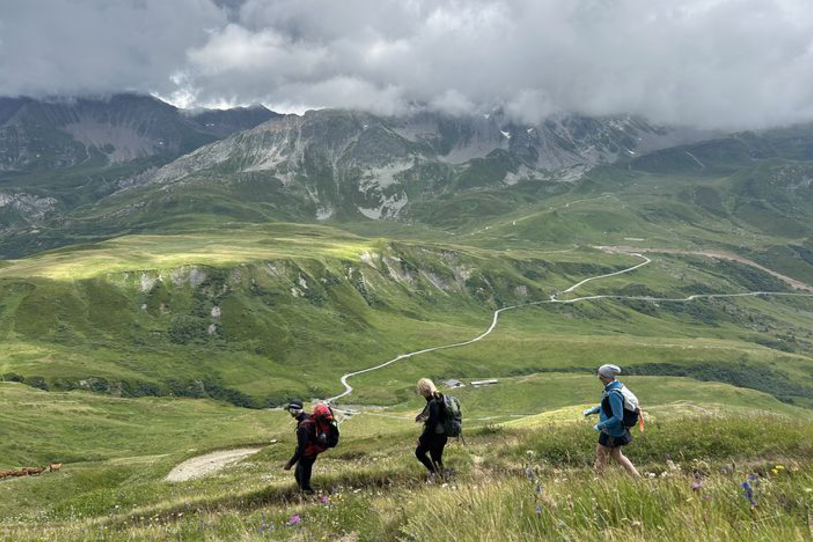
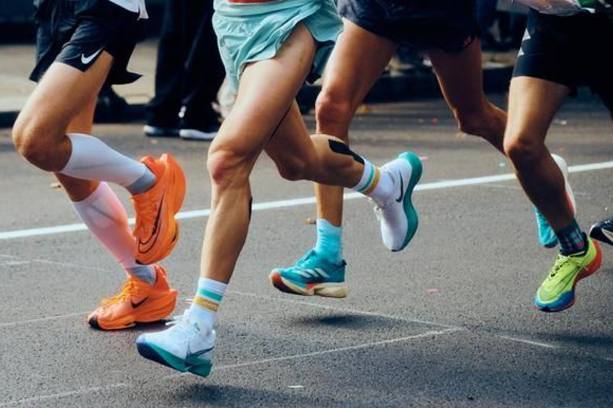
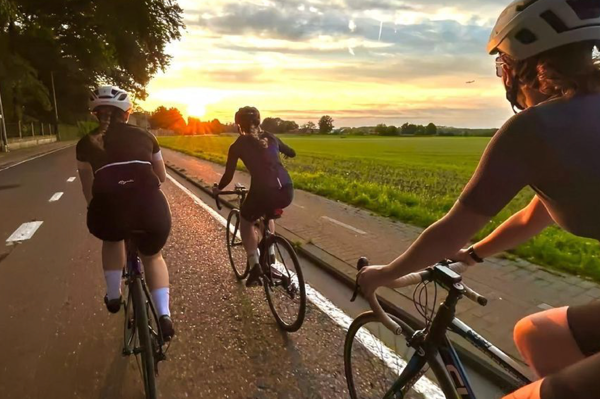

Pridruži se milijunima sportaša
koji koriste Stravu
za praćenje aktivnosti i avantura.
Aktivnih korisnika
Prijeđenih kilometara
Dnevnih izazova

Prati korake i svakodnevnu aktivnost.

Prati tempo, udaljenost i osobni napredak.

Analiziraj rutu, brzinu i izdržljivost.
Evidentiraj vježbe, serije i formu.
“Strava je potpuno promijenila način na koji treniram. Praćenje mog napretka motivira me svaki dan.”